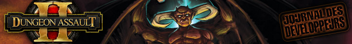

")
 Dungeon Assault II : 2e partie - Un nouveau look pour les donjons
Dungeon Assault II : 2e partie - Un nouveau look pour les donjons


14 mai 2009 � Un nouveau look pour les donjons
Pour commencer sur le projet Dungeon Assault II, Mod Korpz et moi avons mis au point le prototype d'une nouvelle m�canique de construction des donjons. Nous trouvions les fonctions de gestion du jeu d'origine trop limit�es et nous voulions permettre aux joueurs de cr�er leurs propres donjons. Vous aurez donc votre mot � dire sur le parcours d'un groupe d'assaillants � l'int�rieur de votre donjon, de l'entr�e jusqu'� la chambre du tr�sor.

Aussi prometteuse qu'elle soit, cette nouvelle fonction a un prix. Nous devions nous assurer que les gens ne puissent pas construire de donjons pr�visibles et ennuyeux. Et surtout, nous devions faire en sorte qu'il soit difficile de construire des donjons facilitant les assauts � r�p�tition.
Nous nous sommes r�unis pour deux sessions autour d'un tableau blanc, avec pour objectif de d�finir les concepts de fonctionnement de cette nouvelle m�canique. Les quatre entr�es des donjons d'antan ont disparu. Dor�navant, les donjons auront une seule entr�e situ�e au centre de la carte. Pour que les assauts soient plus vari�s, nous avons d�cid� de laisser les joueurs raisonnablement libres de placer leur chambre du tr�sor l� o� ils le souhaitent.
Ensuite, nous avons dessin� des prototypes au crayon pour voir comment cette nouvelle m�canique de construction allait fonctionner. Nous avons m�me cannibalis� un jeu de soci�t� qui tra�nait au bureau, histoire de voir si nous pouvions construire quelque chose d'int�ressant. Chaque nouveau plan de donjon commence par sa case d'entr�e crois�e, situ�e au centre. Le joueur re�oit une case � placer � la fois. Certaines de ces cases seront munies d'un pi�ge ou d'un monstre, selon un budget pr�d�fini afin de garantir � tous les joueurs un donjon d'un certain niveau de difficult� au d�part.
Nous avons ensuite d�fini un ensemble de r�gles pour contr�ler les interactions entre les nouvelles cases et celles qui sont d�j� en place. Nous devions absolument nous assurer qu'il soit impossible de construire un donjon dont certaines parties sont inaccessibles. Les assaillants doivent donc pouvoir atteindre chaque nouvelle case � partir des cases existantes (en d�molissant un mur si n�cessaire), sans pour autant se retrouver avec des croisements partout. C'est pourquoi nous avons d�cid� de conserver les portes et murs existants, autant que possible.

Pour emp�cher les gens de construire des donjons en colima�on et sans difficult� pour leurs assaillants, nous avons opt� pour une approche � en cercles concentriques �. Pour commencer, les joueurs pourront seulement placer leur case sur l'un des huit emplacements qui entourent la case centrale. Une fois ces emplacements remplis, ils pourront passer au niveau suivant et placer leurs cases dans le cercle qui entoure les neuf cases centrales. Le processus continue jusqu'� ce que le donjon soit rempli. La forme des cases � placer et leur fr�quence est aussi un facteur important : trop de croisements (en T ou en X) et le donjon obtenu serait trop � connect� �. Nous avons aussi d� appliquer des restrictions � la position de la chambre du tr�sor. En effet, celle-ci ne doit pas �tre facilement accessible d�s l'entr�e du donjon. Les donjons ne sont pas des supermarch�s, tout de m�me !
Apr�s quelques essais, nous sommes pass�s du prototype au codage. Il s'agissait alors de v�rifier que nos mod�les au crayon fonctionnaient bien en tant que jeu vid�o. Nous nous sommes vite rendu compte que la construction marchait bien, mais que certaines fonctions permettraient d'en am�liorer la jouabilit�. L'�diteur doit montrer au joueur l'effet de chaque nouvelle case sur la partie existante du donjon. Sinon, les r�gles affich�es en haut de l'�cran paraissent al�atoires et m�me injustes. Nous avons aussi r�alis� que les nouveaux donjons de 9x9 cases �taient trop vastes pour les joueurs d�butants.
Les informations visuelles sont au c�ur du processus de construction. Une couleur sp�cifique sera utilis�e pour les portes supprim�es, et une autre pour celles � ajouter. Les cases dont la structure a chang� seront indiqu�es par une autre couleur. Quand l'�quipe des Graphismes mettra la main sur le prototype, ils devront garder ces principes � l'esprit pour que le jeu final soit aussi intuitif que possible.
Et c'est ainsi qu'au terme de cette �tape de conception it�rative et de prototypage minutieux, nous avons obtenu un �diteur de donjon dont nous sommes fiers et qui promet d'�tre captivant, m�me ind�pendamment du reste du jeu. Il fera partie int�grante de Dungeon Assault II.
Mod Vile
D�veloppeur FunOrb
(Renomm�e actuelle : Infini+1)